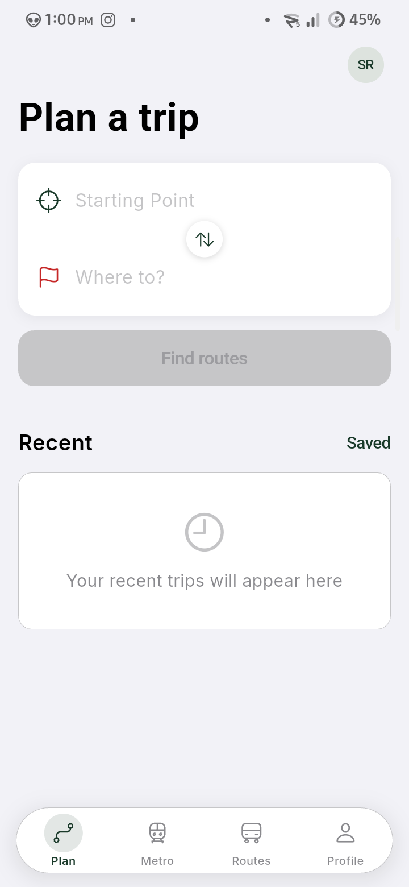
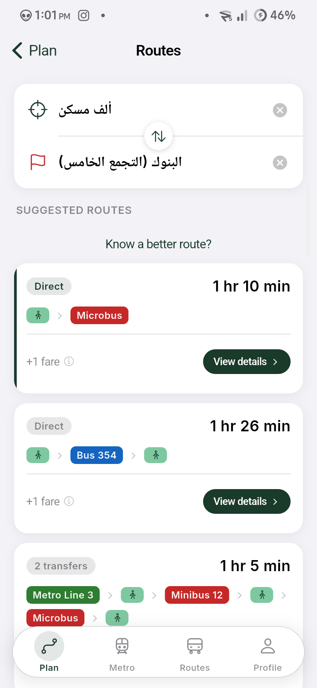
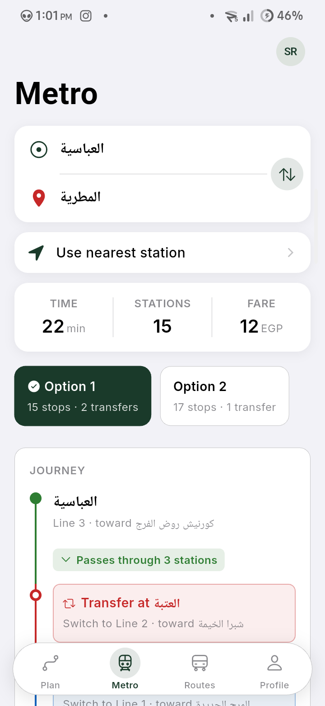
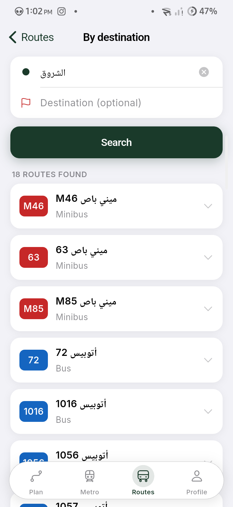
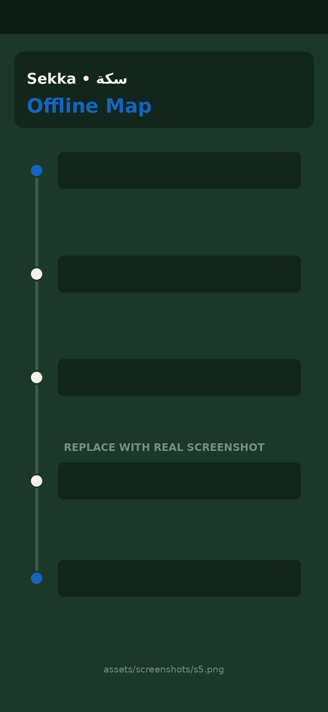

One trip. Every way to get there.
Metro, bus, minibus, and microbus — planned together, not app by app. Sekka finds the route no single line covers, even offline.

Why Sekka
Built for how Cairo actually moves
No line covers this city alone — so Sekka doesn't plan like it does.
Combined routing
One trip can span different modes, reaching places no single line serves.
Works offline
Routing data and the Cairo map are bundled right on your device.
Metro fare estimates
Zone-based fare estimates, so you don't count stations every time.
Fully bilingual
Switch Arabic and English for the interface and station names, independently.
Route browser
Search any line by number or destination, with bilingual stop names.
Flexible starting points
Search, drop a pin, use GPS, or paste a Google Maps link.
A look inside
Every screen, planned like a route map
From first search to boarding — five screens, one trip.
Route Planner

Multimodal Trip

Metro Navigator

Route Browser

Offline Map
Sekka is an independent app — not affiliated with or endorsed by the Egyptian government, the Metro authority, or any public transit operator. Microbus and route data is community-documented and unofficial. Fares, routes, and times are estimates and subject to change — confirm with the driver or operator.
Get moving with Sekka
Free to download. No account required to start planning.
Get it on Google Play